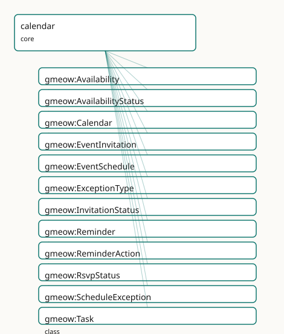

GMEOW Calendar and Scheduling Module
- IRI: https://blackcatinformatics.ca/gmeow/slices/calendar
- Tier: core
Group: core
What This Slice Covers
This slice owns 61 terms and contributes 49 mapping or projection rows. Use it when its terms match the native fact you want to preserve; use the linkage tables to see how those facts leave GMEOW for consumer vocabularies.
Dependencies
Consumers
- Scheduling atop events: the mail corpus's invitations, the >25%-usage floor (named in).
Local Map

Terms
Classes
| Term | Label | Definition |
|---|---|---|
gmeow:Availability |
Availability | A time-scoped statement of an agent's availability over an interval — free, busy, tentative, or out-of-office. The free-busy spine of the calendar layer. |
gmeow:AvailabilityStatus |
Availability Status | The availability state of an agent over a time slot — a VALUE vocabulary aligned to iCalendar VFREEBUSY, never a subclass. |
gmeow:Calendar |
Calendar | A CalDAV-style collection of scheduled events — an information object that aggregates calendar members and carries a default time zone. The container, not the... |
gmeow:EventInvitation |
Event Invitation | A social act inviting an agent to attend an event, reified as a relator. Models the invitation as an Agreement to attend, reusing gmeow:hasParty for the invite... |
gmeow:EventSchedule |
Event Schedule | A recurrence rule anchored to a template event and a time zone, generating a series of concrete Event occurrences. A relator mediating the template event, the... |
gmeow:ExceptionType |
Exception Type | The kind of a schedule exception — a VALUE, never a subclass. |
gmeow:InvitationStatus |
Invitation Status | The status of an event invitation — a VALUE vocabulary aligned to iTIP PARTSTAT, never a subclass. |
gmeow:Reminder |
Reminder | A reminder associated with an event — a trigger (offset or absolute time) and an action (display, email, audio). |
gmeow:ReminderAction |
Reminder Action | The action to take when a reminder fires — a VALUE vocabulary aligned to iCalendar ACTION, never a subclass. |
gmeow:RsvpStatus |
RSVP Status | The RSVP response status as asserted by an invitee — a VALUE vocabulary, distinct from InvitationStatus so that organizer and invitee claims can coexist (Princ... |
gmeow:ScheduleException |
Schedule Exception | An exception to a recurring event schedule — a cancellation or rescheduling of a specific generated occurrence. A relator mediating the schedule, the original... |
gmeow:Task |
Task | A to-do or task — an event with a due date, status, priority, and optional recurrence-until-done. A subtype of gmeow:Event so it participates in the full event... |
gmeow:TaskStatus |
Task Status | The status of a task — a VALUE vocabulary, never a Task subclass. |
gmeow:TimeZone |
Time Zone | A time zone identified by an IANA tzid (e.g. America/Toronto). Used by calendars, schedules, and events to express civil time relative to a geographic referenc... |
Properties
| Term | Label | Definition |
|---|---|---|
gmeow:availabilityAgent |
availability agent | The agent whose availability is stated. |
gmeow:availabilitySlot |
availability slot | The time interval over which the availability status holds. |
gmeow:availabilityStatus |
availability status | The availability status for this slot — free, busy, tentative, or out-of-office. |
gmeow:calendarMember |
calendar member | An event that is a member of this calendar. Non-functional: a calendar may contain many events. |
gmeow:calendarTimeZone |
calendar time zone | The default time zone for a calendar collection. |
gmeow:eventTimeZone |
event time zone | The time zone in which an event's temporal placement is expressed. |
gmeow:exceptionOriginalDate |
exception original date | The original date/time of the occurrence being excepted — the instance that would have been generated by the recurrence rule. |
gmeow:exceptionReplacementEvent |
exception replacement event | The replacement event for a rescheduled occurrence. Absent for a pure cancellation. |
gmeow:exceptionSchedule |
exception schedule | The event schedule to which this exception applies. |
gmeow:exceptionType |
exception type | The kind of schedule exception — cancellation or rescheduling. |
gmeow:invitationEvent |
invitation event | The event being invited to. |
gmeow:invitationInvitee |
invitation invitee | An agent invited to the event. Non-functional: a joint invitation may name several invitees. |
gmeow:invitationStatus |
invitation status | The current status of the invitation as set by the organizer — needs-action, accepted, declined, tentative. |
gmeow:reminderAction |
reminder action | The action to take when the reminder fires — display, email, or audio. |
gmeow:reminderTarget |
reminder target | The event this reminder is attached to. |
gmeow:reminderTrigger |
reminder trigger | The trigger for a reminder — either an xsd:duration offset before the target event (e.g. PT15M) or an absolute xsd:dateTime. |
gmeow:rsvpStatus |
RSVP status | The RSVP response status as asserted by the invitee — needs-action, accepted, declined, tentative. Distinct from invitationStatus: the organizer's view and the... |
gmeow:scheduleOccurrence |
schedule occurrence | A concrete event occurrence generated by this schedule. Non-functional: a schedule generates many occurrences. |
gmeow:scheduleRecurrenceRule |
schedule recurrence rule | The recurrence rule by which this schedule generates occurrences. Non-functional: a schedule may combine multiple rules (e.g. weekly + monthly exception). |
gmeow:scheduleTemplateEvent |
schedule template event | The template event from which occurrences are generated — the anchor event carrying title, location, participants, and duration. Functional: one template per s... |
gmeow:scheduleTimeZone |
schedule time zone | The time zone in which this schedule's recurrence is expressed. The occurrence generation engine uses this zone when expanding the rule. |
gmeow:taskDueDate |
task due date | The date and time by which the task is due. |
gmeow:taskPriority |
task priority | The priority of the task, 0-9, where 0 is undefined and 1 is highest. Aligned to iCalendar PRIORITY. |
gmeow:taskRecurrenceUntilDone |
task recurrence until done | Whether this recurring task continues until marked done, rather than stopping at a fixed count or end date. |
gmeow:taskStatus |
task status | The status of the task — not-started, in-progress, completed, or cancelled. |
gmeow:timeZoneIanaId |
time zone IANA id | The IANA time zone identifier, e.g. America/Toronto, Europe/Paris, UTC. |
Individuals
| Term | Label | Definition |
|---|---|---|
gmeow:availabilityStatusBusy |
busy | The agent is busy during this slot. Aligned to iCalendar FBTYPE=BUSY. |
gmeow:availabilityStatusFree |
free | The agent is free during this slot. Aligned to iCalendar FBTYPE=FREE. |
gmeow:availabilityStatusOutOfOffice |
out of office | The agent is out of office. Aligned to iCalendar FBTYPE=BUSY-UNAVAILABLE. |
gmeow:availabilityStatusTentative |
tentative | The agent is tentatively busy. Aligned to iCalendar FBTYPE=BUSY-TENTATIVE. |
gmeow:exceptionTypeCancellation |
cancellation | The occurrence is cancelled. |
gmeow:exceptionTypeRescheduling |
rescheduling | The occurrence is moved to a different time. |
gmeow:invitationStatusAccepted |
accepted | The invitee has accepted the invitation. Aligned to iTIP PARTSTAT=ACCEPTED. |
gmeow:invitationStatusDeclined |
declined | The invitee has declined the invitation. Aligned to iTIP PARTSTAT=DECLINED. |
gmeow:invitationStatusNeedsAction |
needs action | The invitee has not yet responded. Aligned to iTIP PARTSTAT=NEEDS-ACTION. |
gmeow:invitationStatusTentative |
tentative | The invitee has tentatively accepted. Aligned to iTIP PARTSTAT=TENTATIVE. |
gmeow:reminderActionAudio |
audio | Play an audio reminder. Aligned to iCalendar ACTION=AUDIO. |
gmeow:reminderActionDisplay |
display | Display the reminder on screen. Aligned to iCalendar ACTION=DISPLAY. |
gmeow:reminderActionEmail |
Send the reminder by email. Aligned to iCalendar ACTION=EMAIL. | |
gmeow:rsvpStatusAccepted |
accepted | The invitee has accepted. |
gmeow:rsvpStatusDeclined |
declined | The invitee has declined. |
gmeow:rsvpStatusNeedsAction |
needs action | The invitee has not yet responded. |
gmeow:rsvpStatusTentative |
tentative | The invitee has tentatively accepted. |
gmeow:taskStatusCancelled |
cancelled | The task is cancelled. Retained with displayable false, never deleted (Principle 10). |
gmeow:taskStatusCompleted |
completed | The task is completed. |
gmeow:taskStatusInProgress |
in progress | The task is actively being worked on. |
gmeow:taskStatusNotStarted |
not started | The task has not yet been started. |
Linkages
- Rows: 49
- Projection profiles:
ical,jcal,schema-org-schedule - External vocabularies:
https,ical,rdf,schema,wd
| Source | Kind | Profile | Predicate/Relation | Target | Evidence |
|---|---|---|---|---|---|
gmeow:Availability |
equivalence | - |
skos:closeMatch | ical:Vfreebusy | gmeow-calendar.sssom.tsv; gmeow:eqCalendar007; confidence 0.75 |
gmeow:Calendar |
equivalence | - |
skos:relatedMatch | ical:Vcalendar | gmeow-calendar.sssom.tsv; gmeow:eqCalendar001; confidence 0.7 |
gmeow:EventInvitation |
equivalence | - |
skos:relatedMatch | schema:RsvpAction | gmeow-calendar.sssom.tsv; gmeow:eqCalendar008; confidence 0.55 |
gmeow:EventSchedule |
equivalence | - |
skos:relatedMatch | ical:Vevent | gmeow-calendar.sssom.tsv; gmeow:eqCalendar003; confidence 0.5 |
gmeow:EventSchedule |
equivalence | - |
skos:closeMatch | schema:Schedule | gmeow-calendar.sssom.tsv; gmeow:eqCalendar002; confidence 0.85 |
gmeow:Reminder |
equivalence | - |
skos:closeMatch | ical:Valarm | gmeow-calendar.sssom.tsv; gmeow:eqCalendar005; confidence 0.85 |
gmeow:Task |
equivalence | - |
skos:closeMatch | ical:Vtodo | gmeow-calendar.sssom.tsv; gmeow:eqCalendar004; confidence 0.8 |
gmeow:TimeZone |
equivalence | - |
skos:closeMatch | ical:Vtimezone | gmeow-calendar.sssom.tsv; gmeow:eqCalendar006; confidence 0.85 |
gmeow:availabilityStatus |
equivalence | - |
skos:closeMatch | ical:fbtype | gmeow-calendar.sssom.tsv; gmeow:eqCalendar014; confidence 0.8 |
gmeow:invitationStatus |
equivalence | - |
skos:closeMatch | ical:partstat | gmeow-calendar.sssom.tsv; gmeow:eqCalendar015; confidence 0.8 |
gmeow:invitationStatusAccepted |
equivalence | - |
skos:closeMatch | wd:Q2498022 | gmeow-calendar.sssom.tsv; gmeow:eqCalendar020; confidence 0.8 |
gmeow:reminderAction |
equivalence | - |
skos:closeMatch | ical:action | gmeow-calendar.sssom.tsv; gmeow:eqCalendar017; confidence 0.85 |
gmeow:reminderActionDisplay |
equivalence | - |
skos:closeMatch | wd:Q548665 | gmeow-calendar.sssom.tsv; gmeow:eqCalendar022; confidence 0.6 |
gmeow:reminderTrigger |
equivalence | - |
skos:closeMatch | ical:trigger | gmeow-calendar.sssom.tsv; gmeow:eqCalendar012; confidence 0.85 |
gmeow:scheduleOccurrence |
equivalence | - |
skos:closeMatch | schema:subEvent | gmeow-calendar.sssom.tsv; gmeow:eqCalendar010; confidence 0.7 |
gmeow:scheduleRecurrenceRule |
equivalence | - |
skos:closeMatch | ical:rrule | gmeow-calendar.sssom.tsv; gmeow:eqCalendar019; confidence 0.9 |
gmeow:scheduleRecurrenceRule |
equivalence | - |
skos:closeMatch | schema:repeatFrequency | gmeow-calendar.sssom.tsv; gmeow:eqCalendar009; confidence 0.75 |
gmeow:taskDueDate |
equivalence | - |
skos:closeMatch | ical:due | gmeow-calendar.sssom.tsv; gmeow:eqCalendar011; confidence 0.85 |
gmeow:taskPriority |
equivalence | - |
skos:closeMatch | ical:priority | gmeow-calendar.sssom.tsv; gmeow:eqCalendar016; confidence 0.85 |
gmeow:taskStatus |
equivalence | - |
skos:closeMatch | ical:status | gmeow-calendar.sssom.tsv; gmeow:eqCalendar018; confidence 0.8 |
gmeow:taskStatusCompleted |
equivalence | - |
skos:closeMatch | wd:Q1198487 | gmeow-calendar.sssom.tsv; gmeow:eqCalendar021; confidence 0.8 |
gmeow:timeZoneIanaId |
equivalence | - |
skos:closeMatch | ical:tzid | gmeow-calendar.sssom.tsv; gmeow:eqCalendar013; confidence 0.9 |
gmeow:Calendar |
projection | ical |
projects to / <= | ical:Vcalendar, ical:tzid, rdf:type | gmeow:mapIcalVcalendar |
gmeow:Task |
projection | ical |
projects to / <= | ical:Vtodo, ical:due, ical:priority, ical:status, rdf:type | gmeow:mapIcalVtodo |
| ... | ... | ... | ... | ... | 25 more rows |
Guide
Calendar and Scheduling Mapping
This document describes the GMEOW calendar and scheduling slice: the mapping
between GMEOW's canonical scheduling layer and external calendar vocabularies —
iCalendar (RFC 5545/5546/6047), jCal (RFC 7265), xCal (RFC 6321), CalDAV (RFC
4791/6638/7809), schema.org Schedule/EventSeries, OWL-Time, and Wikidata.
Design Principles
- Schedule ≠ occurrence. An
EventSchedule(rule + anchor + time zone) generatesEventoccurrences; it is not itself the occurrence. ReuseEventSeries/RecurrenceRule; add occurrence-generation + exceptions. - Reify the social acts as relators (the
Participationidiom):EventInvitation(event × invitee × status),Availability(agent × interval × status) — never flat properties. - Open value vocabularies, not subclasses:
invitationStatus/rsvpStatus(needs-action / accepted / declined / tentative — iTIP PARTSTAT),availabilityStatus(free / busy / tentative / out-of-office),reminderAction(display / email / audio),taskStatus(not-started / in-progress / completed / cancelled). - Cancelled ≠ deleted (Principle 10). A cancelled/rescheduled occurrence is
displayable false+ aScheduleException, retained, never erased. - Contested times coexist. A disputed time/date is standpoint-indexed
via
accordingTo; no single winner.
Core Classes
| GMEOW | gUFO grounding | Description |
|---|---|---|
Calendar |
InformationObject |
CalDAV-style collection of events |
EventSchedule |
Relator |
Recurrence rule + template event + time zone |
ScheduleException |
Relator |
Cancellation or rescheduling exception |
EventInvitation |
Agreement + Relator |
Invitation ≈ agreement to attend |
Availability |
TimeScopedRelation |
Agent's free/busy/tentative/ooo slot |
Reminder |
Entity |
Trigger + action attached to an event |
Task |
Event |
To-do with due date, status, priority |
TimeZone |
Entity |
IANA tzid (e.g. America/Toronto) |
Value Vocabularies (individuals, never subclasses)
| Vocabulary | Seed values | External alignment |
|---|---|---|
ExceptionType |
cancellation, rescheduling | iCalendar EXDATE / STATUS |
InvitationStatus |
needs-action, accepted, declined, tentative | iTIP PARTSTAT |
RsvpStatus |
needs-action, accepted, declined, tentative | iTIP PARTSTAT (invitee view) |
AvailabilityStatus |
free, busy, tentative, out-of-office | iCalendar FBTYPE |
ReminderAction |
display, email, audio | iCalendar ACTION |
TaskStatus |
not-started, in-progress, completed, cancelled | iCalendar STATUS |
Projection Loss Matrices
iCalendar (RFC 5545)
| GMEOW | iCalendar | Loss |
|---|---|---|
EventSchedule |
VCALENDAR + VEVENT instances |
Standpoint, confidence, sub-event tree |
ScheduleException |
EXDATE / STATUS:CANCELLED |
Exception provenance, replacement event detail |
EventInvitation |
ATTENDEE;PARTSTAT=... |
Reified agreement, period, confidence |
Availability |
VFREEBUSY;FBTYPE=... |
Agent identity, slot provenance |
Reminder |
VALARM |
Standpoint, confidence |
Task |
VTODO |
Event type vocabulary, location, participation |
TimeZone |
VTIMEZONE |
Full daylight/standard expansion is solver concern |
schema.org Schedule / EventSeries
| GMEOW | schema.org | Loss |
|---|---|---|
EventSchedule |
Schedule |
Recurrence structure beyond repeatFrequency |
EventSchedule.scheduleOccurrence |
Event (subEvent) |
Standpoint, confidence |
Task |
Event |
eventStatus only captures cancelled/not-cancelled |
EventInvitation |
RsvpAction |
Agreement structure, period, confidence |
OWL-Time
| GMEOW | OWL-Time | Loss |
|---|---|---|
Availability.availabilitySlot |
time:Interval |
Availability status is not temporal |
Task.taskDueDate |
time:hasTime / time:Instant |
Task status, priority |
EventSchedule |
time:Schedule (if used) |
Recurrence rule semantics |
Build Order
Depends only on the built events + temporal modules. Phases:
- Schedule + recurrence/exceptions
- Invitation/RSVP + availability
- Reminders + tasks + time zones
- Extend ical + add jcal/schema.org Schedule projections